Module 01
Contents
Exercise 1.1
Create a variable to store the atomic weight of copper (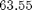).
atomicWeightOfCopper = 63.55
atomicWeightOfCopper = 63.5500
Exercise 1.2
myage = 21 myage - 2 myage + 1
myage =
21
ans =
19
ans =
22
Exercise 1.10
Think about what the results would be for the following expressions, and then type them in to verify your answers.
25 / 5 * 5 = (25 / 5) * 5 = 25
25 / 5 * 5
ans =
25
4 + 3 ^ 2 = 4 + (3 ^ 2) = 13
4 + 3 ^ 2
ans =
13
(4 + 3) ^ 2 = 49
(4 + 3) ^ 2
ans =
49
3 \ 12 + 5 = (3 \ 12) + 5 = 9
3 \ 12 + 5
ans =
9
4 - 2 * 3 = 4 - (2 * 3) = -2
4 - 2 * 3
ans =
-2
Exercise 1.11
Create a variable pounds to store a weight in pounds. Convert this to kilograms and assign the result to a variable kilos. The conversion factor is 1 kilogram = 2.2 pounds.
pounds = 5.7 kilos = 2.2 * pounds
pounds =
5.7000
kilos =
12.5400
Exercise 1.14
The function sin calculates and returns the sine of an angle in radians, and the function sind returns the sine of an angle in degrees. Verify that calling the sind function and passing 90 degrees to it results in 1. What argument would you pass to sin to obtain the result of 1?
sind(90) sin(pi/2)
ans =
1
ans =
1
Exercise 1.29
A vector can be represented by its rectangular coordinates 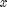 and 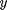 or by its polar coordinates 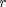 and . The relationship between them is given by the equations:
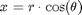
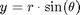
Assign values for the polar coordinates to variables r and . Then, using these values, assign the corresponding rectangular coordinates to variables and .
r = 5 theta = 1/4 * pi x = r * cos(theta) y = r * sin(theta)
r =
5
theta =
0.7854
x =
3.5355
y =
3.5355
Exercise 1.19
Find MATLAB expressions for the following
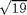
sqrt(19)
ans =
4.3589

3^12
ans =
531441
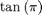
tan(pi) tand(radtodeg(pi))
ans =
-1.2246e-16
ans =
0
Exercise 1.20
Generate a random
real number in the range (0, 20)
rand*20
ans =
3.0544
real number in the range (20, 50)
low = 20; high = 50; rand*(high-low) + low
ans = 30.2337
integer in the inclusive range from 1 to 10
randi(10)
ans =
7
integer in the inclusive range from 0 to 10
randi([0, 10])
ans =
2
integer in the inclusive range from 50 to 100.
randi([50, 100])
ans =
87
Exercise 1.21
Get into a new Command Window and type rand to get a random real number. Make a note of the number. Then exit MATLAB and repeat this, again making a note of the random number; it should be the same as before. Finally, exit MAT- LAB and again get into a new Command Window. This time, change the seed before generating a random number; it should be different.
TL;DR same seed used unless set by user. same seed = same random sequence.
Exercise 2.1
Using the colon operator, create the following row vectors:
2 3 4 5 6 7
2:7
ans =
2 3 4 5 6 7
1.1000 1.3000 1.5000 1.7000
1.1000:0.2000:1.7000
ans =
1.1000 1.3000 1.5000 1.7000
8 6 4 2
8:-2:2
ans =
8 6 4 2
Exercise 2.4
Using the colon operator and also the linspace function, create the following row vectors:
-5 -4 -3 -2 -1
-5:1:-1 linspace(-5, -1, 5)
ans =
-5 -4 -3 -2 -1
ans =
-5 -4 -3 -2 -1
5 7 9
5:2:9 linspace(5, 9, 3)
ans =
5 7 9
ans =
5 7 9
8 6 4
8:-2:4 linspace(8, 4, 3)
ans =
8 6 4
ans =
8 6 4
Exercise 2.5
Create a variable myend which stores a random integer in the inclusive range from 5 to 9. Using the colon operator create a vector that iterates from 1 to myend in steps of 3.
myend = randi([5, 9]) 1:3:myend
myend =
6
ans =
1 4
Exercise 2.6
Using the colon operator and the transpose operator, create a column vector that has the values -1 to 1 in steps of 0.5.
(-1:0.5:1)'
ans =
-1.0000
-0.5000
0
0.5000
1.0000
Exercise 2.12
Create a variable rows that is a random integer in the inclusive range from 1 to 5. Create a variable cols that is a random integer in the inclusive range from 1 to 5. Create a matrix of all zeros with the dimensions given by the values of rows and cols.
rows = randi([1, 5]) cols = randi([1, 5]) zeros(rows, cols)
rows =
5
cols =
2
ans =
0 0
0 0
0 0
0 0
0 0
Exercise 2.20
Create a vector x which consists of 20 equally spaced points in the range from 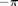 to 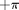. Create a y vector which is 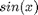.
x = linspace(-pi, pi, 20) y = sin(x)
x =
Columns 1 through 7
-3.1416 -2.8109 -2.4802 -2.1495 -1.8188 -1.4881 -1.1574
Columns 8 through 14
-0.8267 -0.4960 -0.1653 0.1653 0.4960 0.8267 1.1574
Columns 15 through 20
1.4881 1.8188 2.1495 2.4802 2.8109 3.1416
y =
Columns 1 through 7
-0.0000 -0.3247 -0.6142 -0.8372 -0.9694 -0.9966 -0.9158
Columns 8 through 14
-0.7357 -0.4759 -0.1646 0.1646 0.4759 0.7357 0.9158
Columns 15 through 20
0.9966 0.9694 0.8372 0.6142 0.3247 0.0000
Exercise 2.21
Create a 3 x 5 matrix of random integers, each in the inclusive range from -5 to 5. Get the sign of every element.
m = randi([-5, 5], 3, 5) sign(m)
m =
3 -4 1 2 5
-3 1 -1 2 -3
-2 2 2 1 2
ans =
1 -1 1 1 1
-1 1 -1 1 -1
-1 1 1 1 1
Exercise 2.22
Create a 4 x 6 matrix of random integers, each in the inclusive range from -5 to 5; store it in a variable. Create another matrix that stores for each element the absolute value of the corresponding element in the original matrix.
m = randi([-5, 5], 4, 6) abs(m)
m =
-3 0 2 -3 4 5
-4 2 -1 1 -3 2
1 3 4 1 -2 0
-1 -2 4 0 -4 2
ans =
3 0 2 3 4 5
4 2 1 1 3 2
1 3 4 1 2 0
1 2 4 0 4 2
Exercise 2.18
Create a three-dimensional matrix and get its size.
m = zeros(4, 5, 2) size(m)
m(:,:,1) =
0 0 0 0 0
0 0 0 0 0
0 0 0 0 0
0 0 0 0 0
m(:,:,2) =
0 0 0 0 0
0 0 0 0 0
0 0 0 0 0
0 0 0 0 0
ans =
4 5 2